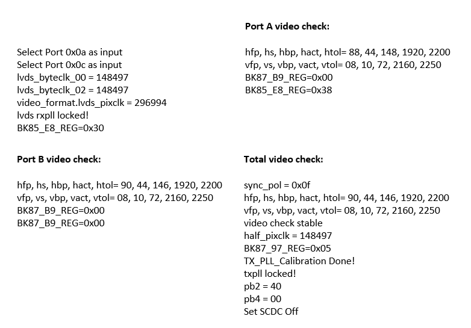

The AD-GMSL-D-E-ADP# GMSL oLDI/LVDS to HDMI adapter
converts oLDI/LVDS signals from GMSL Deserializers to standard HDMI 2.0 output.
This adapter is to be used for debug and system testing only and is not designed
to be fully implemented in a final system architecture.
The adapter is designed to fit all GMSL oLDI Deserializers Evaluation Boards
using the equipped Samtec board-to-board connectors. It utilizes automatic
configuration by “seeing” the incoming oLDI/LVDS signals and adjusting the
HDMI’s output based upon the received signals. A UART output is available to
be used for monitoring the automatic configuration process.
The adapter includes inputs for I2S audio and was designed in such a way that
the GMSL I2S signals (from the forward channel) could be used as inputs. Like
the video setup, the adapter automatically detects and adds the I2S audio data
into the HDMI signals without the need to program the adapter itself.
Features
Converts the oLDI/LVDS signals from GMSL Deserializers to standard HDMI 2.0
Useful for debug and testing of GMSL display systems
Designed to fit all GMSL oLDI Deserializers Evaluation Boards using the equipped Samtec board-to-board connectors
Figure 3 Standard GMSL oLDI Deserializer Connectors
The AD-GMSL-D-E-ADP# GMSL adapter is designed to fit all GMSL oLDI
Deserializers Evaluation boards using the equipped Samtec board-to-board
connectors.
Important
It is critical that this procedure is followed
in every installation of this GMSL adapter; not doing so could incur permanent
damage to the adapter.
The installation steps are as follows:
Start with the Deserializer (EvKit) completely unplugged from all connections
This includes the GMSL Link, USB, oLDI Screen, and Power.
With the unconnected EvKit, install standoff screws and nuts.
Confirm if GMSL link has been established. The Lock LEDs on the EvKits light
up, indicating that links are set up properly. Also, the Power LED on the
AD-GMSL-D-E-ADP# GMSL adapter will light up as an indication that boards
are properly supplied with required power.
Proceed to Configuration after the Link Lock is established.
Deserializer Configuration
The AD-GMSL-D-E-ADP# GMSL adapter utilizes automatic configuration by
“seeing” the incoming oLDI/LVDS signals and adjusting the HDMI’s output based
upon the received signals. For the adapter to operate, the GMSL Deserializer
must be configured to output the appropriate signals. Note that the steps
outlined below contains the Deserializer’s setup only and doesn’t include the
setup for the Serializer.
For Daisy-Chain capable devices, configure Register 0x05, bits [7:6] to be 0x1, 0x2, 0x3 –- this enables the video port output.
For All Devices, set Register 0x1CE to be 0x4E –- this configures the oLDI ports for dual oLDI port operation using VESA LVDS signaling.
Perform normal setup for the Serializer.
After the above steps are completed, video output should be flowing to the connected HDMI-capable monitor.
Advanced Features
HDMI Audio
The AD-GMSL-D-E-ADP# GMSL adapter includes inputs for I2S audio and was
designed in such a way that the GMSL I2S signals (from the forward channel)
could be used as inputs into the adapter. Like the video setup, the adapter
automatically detects and adds the I2S audio data into the HDMI signals without
the need to program the adapter itself.
Follow below procedure for audio hardware setup:
Power OFF the board Deserializer (EvKit) and disconnect the 12 V power
supply.
Jump the following signals on J6: SCK to SCK, SD to SPDIF, and WS to WS.
Reinstall the AD-GMSL-D-E-ADP# GMSL adapter and apply power to the Deserializer.
Perform normal video setup, as described in the Deserializer Configuration section.
Perform normal audio setup based on your audio device’s setup instructions.
At this point, both audio and video should be running for your system.
UART Monitoring
This adapter utilizes automatic configuration by “seeing” the incoming
oLDI/LVDS signals and adjusting the HDMI’s output based upon the received
signals. This process can be monitored by using the adapter’s UART output.
This requires connections from two pins on the adapter to a logic analyzer.
Power OFF and DISCONNECT the Deserializer’s 12 V power supply before setting
up the UART connections.
Connect the logic analyzer to Pin GP4 & GND of the AD-GMSL-D-E-ADP# GMSL adapter.
Below example shows the settings used for the SALEAE Logic Analyzer.
After configuring the Async Serial protocol analyzer using the above
settings, start the data capture.
Open the logic analyzer’s terminal to check the stream of text while the
device is being set up.
Set up the Deserializer based on the procedure described in the Deserializer Configuration section.
The terminal stream should display a plain text readout with the following
information:

Figure 14 Sample Readout in Terminal
Tip
If no video is flowing, the UART output should only
be consist of the first two lines of text. Once video is active, the other lines
will be printed.
Software Development
The GMSL Linux kernel drivers, the complete Linux
distributions for the supported processing platforms, and software user guides
can be found on the Analog Devices GMSL GitHub repository.
{kind=link}
{kind=link}
{kind=link}
{kind=link}
{kind=link}
{kind=link}
{kind=link}
{kind=link}
{kind=link}
{kind=link}
{kind=link}
{kind=link}
{kind=link}